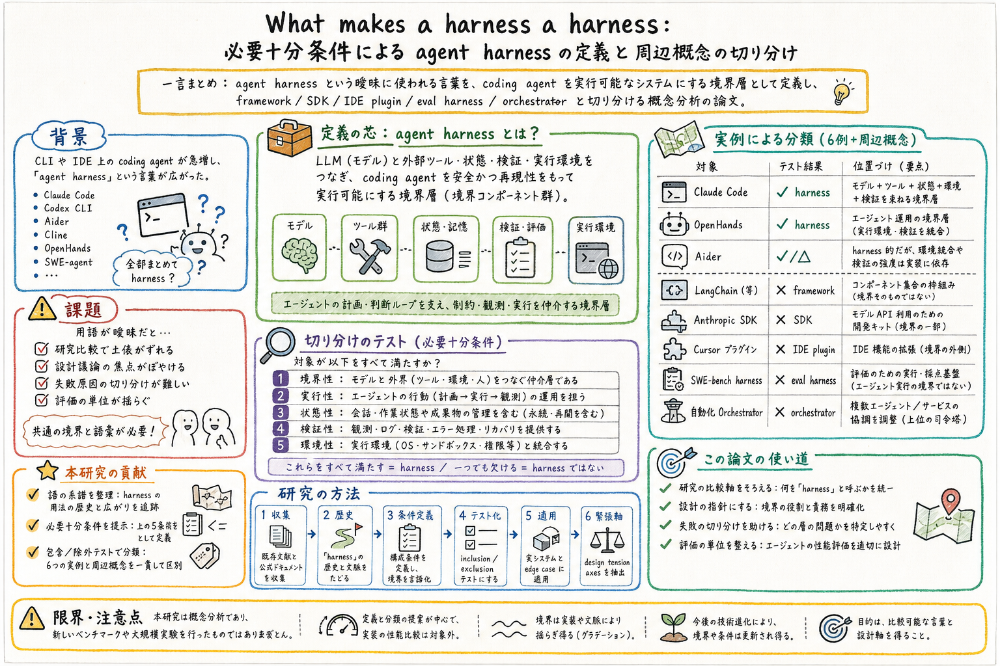

主な貢献は、agent harness という語の系譜を整理したこと、必要十分条件として使える定義を提案したこと、その定義を inclusion / exclusion test として運用可能にしたことにある。

この論文の何がいいか
この論文がよいのは、実務で混ざりがちな言葉をいったん机の上に並べてくれるところだ。agent が失敗したとき、モデルが悪いのか、tool interface が悪いのか、状態管理が悪いのか、検証が弱いのか、実行環境の契約が曖昧なのかを分けないと、修正がすぐ広がりすぎる。
個人 assistant や coding agent の運用では、skill、scheduler、tool wrapper、memory、approval、sandbox、logging、eval が全部絡む。これらを全部 agent framework と呼んでも、全部 harness と呼んでも、判断の焦点がぼやける。この論文は、そのぼやけに名前と境界線を引く。
特に Codex / Claude Code 的な開発環境では、harness は単なる周辺部品ではない。モデルがファイルを読み、コマンドを実行し、状態を保持し、検証し、報告するための実行条件そのものだ。ここを設計対象として見ると、prompt 改善だけでは届かない失敗を扱いやすくなる。
おい丸運用に引くなら、scheduled-ops、article-page-publisher、skills、wiki memory、Discord 経由操作を、それぞれどの harness 条件に依存しているか分解できる。これは、失敗時の切り分けや skill 更新の粒度を決める土台になる。
どんな論文か
この論文は、agent harness という言葉の境界を定義するための概念分析である。Claude Code、Codex CLI、Aider、Cline、OpenHands、SWE-agent などの登場によって、harness という語は広く使われるようになったが、その意味はかなり揺れている。
ある文脈では harness は coding agent 製品全体を指し、別の文脈では SWE-bench のような評価基盤を指す。さらに agent framework、SDK、IDE plugin、orchestrator とも混同される。こうなると、研究比較や実装設計で何を比べているのかが曖昧になる。
論文は、古典的な test harness から machine-learning evaluation harness、そして agent harness へ至る語の系譜をたどり、必要十分条件として使える constitutive definition を提案する。その定義を inclusion / exclusion test として運用し、実システムや edge case に当てはめる。
読む価値は、新しいアルゴリズムを得ることではなく、agent system をどの層で設計・評価・修理するかを言葉で分けられるようになる点にある。harness を雰囲気語で終わらせず、モデル、ツール、状態、検証、実行環境の境界概念として扱うための論文だ。
この論文は、agent harness という用語を operational に定義する。対象は、言語モデルを coding agent として動かすために、その外側で実行、状態、ツール、検証、環境との接続を担う層である。
論文の関心は、特定の harness が高性能かどうかではなく、何を harness と呼び、何を framework、SDK、IDE plugin、eval harness、orchestrator と分けるべきかにある。
課題と貢献
さらに、Claude Code、Codex CLI、Aider、Cline、OpenHands、SWE-agent などの実システムと edge case に適用し、境界が一貫して引けることを示す。最後に、今後の研究や設計に使える design tension axes を整理する。
手法のしくみ
1
入力は、永続識別子を持つ研究文献、公式ドキュメント、用語集、エンジニアリングレポートなどの一次・準一次資料である。
2
まず、harness という言葉の歴史を、馬具、古典的 test harness、machine-learning evaluation harness、agent harness へとたどる。
3
次に、agent harness が成立するための構成条件を抽出する。ここでは、モデルを実行可能な agent にするための境界層として、ツール、状態、環境、検証、制御の関係を見る。
4
その定義を inclusion / exclusion test に変換し、あるシステムが agent harness に含まれるか、agent framework、SDK、IDE plugin、eval harness、orchestrator に近いのかを判定する。
5
最後に、実在する6つの harness と deliberate edge cases に適用し、設計上の tension axes を導く。
検証結果
論文は、agent harness、agent framework、agent SDK、IDE plugin、eval harness、orchestrator の境界を一貫して説明できる定義を提示する。
この結果により、coding agent の比較で、製品全体を比べているのか、実行基盤を比べているのか、評価 scaffold を比べているのかを分けやすくなる。
課題と議論
この論文は概念分析なので、新しい benchmark score や大規模実験を出すタイプの論文ではない。読む時は、性能改善の即効薬ではなく、設計と比較の言葉を整える資料として見るのがよい。
一方で、agent system が複雑になるほど、この種の境界定義は実務的になる。失敗を model の問題に寄せすぎるのか、harness の契約や観測性の問題として見るのかで、修正の方向が変わるからだ。
注意点として、境界を硬くしすぎると、製品や研究が複数の役割を持つ現実を見落とす可能性がある。定義はラベル貼りではなく、議論の焦点を合わせるために使うのがよい。
次に読むなら
- 次に読むなら、Code as Agent Harness、Is Grep All You Need?、Harness-1、From Failed Trajectories to Reliable LLM Agents を並べるとよい。定義、検索、状態外部化、失敗診断がつながる。
- 実務に落とすなら、既存 workflow を model、tool interface、state、verification、approval、logging、artifact output に分け、どこまでが harness 責務かを小さな表にするところから始められる。
読後Q&A
この論文の中心問いは？
agent harness とは何であり、agent framework、SDK、IDE plugin、eval harness、orchestrator とどう違うのかを、必要十分条件として定義できるか。
なぜ定義が必要なの？
用語が曖昧だと、研究比較、設計議論、失敗原因の切り分け、評価の単位がずれるから。何を harness と呼ぶかを揃えることで、議論の焦点を合わせられる。
agent harness は製品全体のこと？
論文の問題意識では、製品全体と harness は混同されやすい。harness は、言語モデルを実行可能な agent にするための境界層として捉えられる。
eval harness とは違うの？
eval harness は評価を実行する scaffold を指すことが多い。agent harness は、agent が実際に行動するための tool、state、environment、verification、control の層まで含む。
実例として何が扱われる？
Claude Code、Codex CLI、Aider、Cline、OpenHands、SWE-agent などの実システムが、定義の適用対象として扱われる。
この論文は実験論文？
主には概念分析の論文。新しい benchmark score を競うのではなく、用語の境界と比較可能な定義を作ることが目的。
実務では何に効く？
agent が失敗した時に、モデル、prompt、tool interface、状態管理、検証、実行環境のどこを直すべきかを分ける語彙として使える。
skill 運用とはどうつながる？
skill は agent が参照する手続き知識だが、それをどう読み込み、権限を与え、検証し、実行するかは harness 側の設計になる。
読む時の一番のポイントは？
定義文そのものより、inclusion / exclusion test を見て、なぜこれは harness で、なぜこれは framework や orchestrator なのかを追うこと。
限界は？
概念定義なので、境界は実装の進化で揺れる可能性がある。ラベルとして固定するより、比較と設計の焦点を合わせる道具として使うのがよい。